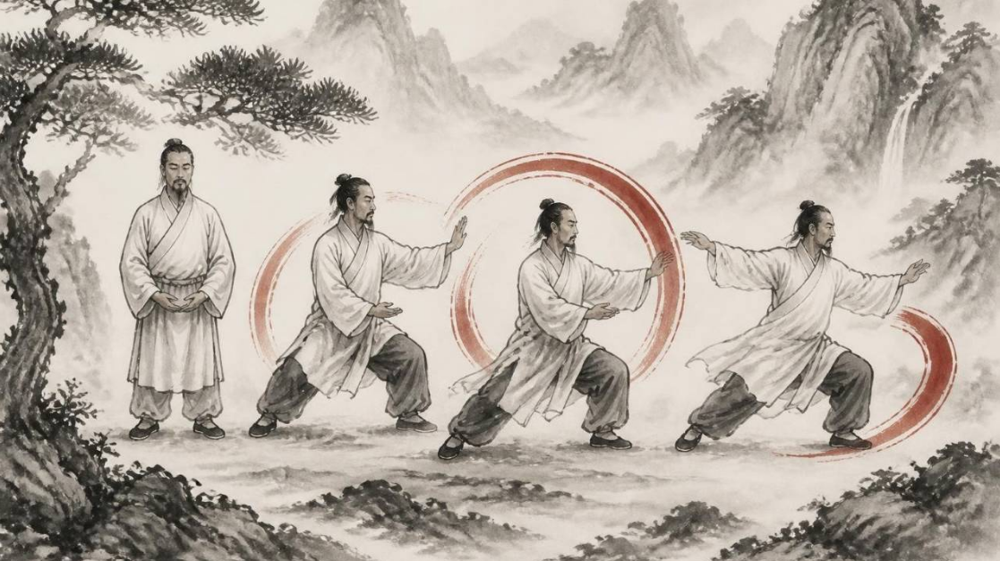

Qi Gong

Qi Gong is about becoming both soft and strong — grounded, open and resilient.
Qi Gong is a traditional Chinese practice rooted in Traditional Chinese Medicine, combining movement, breathing and awareness to cultivate and balance the body’s energy.
The word Qi is often translated as energy, and Gong as cultivation or practice, or simply work. Through gentle, flowing movements, breathing and whole-body awareness, we explore how to become more relaxed, grounded and connected.
When we spend too much time in our heads or become caught up in our emotions, the body can become tense and restricted.
Through the practice of Qi Gong, we begin to reverse this process. As we soften the body, we release tension and blockages that may have become stored within us. We become more open, allowing energy to flow more freely through the body.
This helps us become less reactive to stress, frustration and the emotions around us. Instead, we can feel more grounded, present and connected to ourselves, creating space to respond to life's challenges rather than simply react to them.
Through continuous circular, twisting and turning movements, we create more space and softness in the body, helping to release tension and blockages. At the same time, we develop strength in a gentle and effortless way.
It is a little like water flowing continuously around a rock. Water is soft, while the rock is hard, yet over time, the softness and persistence of the water gradually shape and transform the rock.
← Back to my website